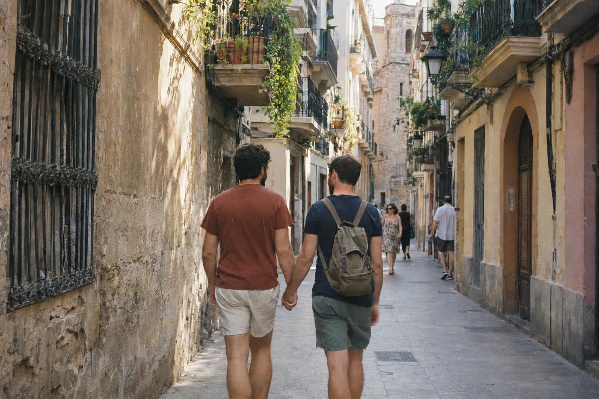

Убежище в Испании для ЛГБТ: полный гайд
Весь путь от решения уехать до карты резидента и гражданства: кто может просить защиту, как подготовиться, подать запрос, пройти интервью и дождаться решения.

Испания прямо признает ориентацию и гендерную идентичность основанием для международной защиты. Путь выглядит так: подготовка и виза, запись в полицию, первый визит, интервью с кейсом, документы на время ожидания и решение. После одобрения выдают карту резидента на 5 лет, а подавать на гражданство можно через 5 лет после интервью.
Почему Испания
Испания была третьей страной в мире, которая легализовала однополые браки. С мая 2026 года она на первом месте в Rainbow Map ILGA-Europe, а закон Ley 4/2023 прямо называет ориентацию и гендерную идентичность основанием для защиты. Статистика одобрений для россиян сейчас высокая: свою роль играют гомофобные законы в России и война против Украины.
Мы команда ЛГБТ-людей и союзников. Многие из нас сами прошли этот путь и живут в Испании. С конца 2022 года с нами переехали и запросили защиту 187 человек. Ниже – общая карта процесса. По каждому этапу на сайте есть отдельная статья.
Кто может просить защиту
Международную защиту в Испании может запросить человек, который не является гражданином страны ЕС, находится за пределами своей страны и не может или не хочет просить у нее защиты, потому что там ему угрожает опасность. Одно из оснований – ориентация или гендерная идентичность.
Частый миф: убежище дают только политикам и журналистам, которым адресно угрожает государство. На деле защиту могут просить все, кого собственное государство не защищает: не реагирует на угрозы или дискриминирует по закону. Преследовать могут и частные лица – тогда нужно показать, что дома защиты не найти. Если вы обращались в полицию и получили отказ, это работает в вашу пользу.
Причиной может быть и обоснованный страх будущего преследования. Если людей из вашей группы преследуют, а вас это пока не коснулось, страх все равно может быть обоснованным. Подробно об этом – в статье «Кто может запросить международную защиту в Испании».
Защиту не дают, если причина отъезда – желание улучшить условия жизни, а не угроза. И Женевская конвенция исключает людей, совершивших тяжкие преступления.
Взвесьте плюсы и минусы
Прежде чем решаться, посмотрите на ограничения статуса. Пока вы проситель и потом получатель защиты, нельзя ездить в страну гражданства и обращаться в ее посольство: обновить загранпаспорт там уже не получится. Первые месяцы нельзя официально работать. Процедура долгая, а ожидание дается психологически тяжело.
Взамен вы получаете легальное пребывание с момента подачи, медицинскую страховку, право на работу и короткий путь к гражданству. Подробный разбор – в статье «Плюсы и минусы международной защиты».
Подготовка до отъезда
Главное до выезда:
- загранпаспорт;
- виза, если есть возможность ее получить;
- кейс и доказательства;
- дела по чек-листам перед отъездом: документы, доверенность, телефон, деньги.
Без визы гражданам России до Испании не долететь. Авиакомпания не посадит на рейс, а для пересадки в Испании с 12.07.2025 нужна транзитная виза (ATV). Поэтому виза – обычная отправная точка.
Сделать кейс лучше до отъезда. В Испании первые недели уйдут на бытовые дела, а дома проще собрать доказательства: справки, свидетельские письма, фото и видео.
Кейс и доказательства
Кейс – это ваша история, изложенная письменно: что с вами происходило, почему вы боитесь вернуться и почему не можете получить защиту дома. На интервью вы приносите его распечатанным вместе с приложениями. Подать кейс можно и на русском, но лучше перевести его на испанский.
Что делает кейс сильнее:
- связь личных событий с тем, как в стране относятся к ЛГБТ-людям: законы, новости, высказывания политиков, действия полиции;
- ваши переживания и то, как страх менял вашу жизнь;
- логичный момент отъезда;
- доказательства: официальные документы, медицинские справки, обращения в полицию, фото и видео, свидетельские показания, публикации в интернете.
Как подают запрос
Подаваться в аэропорту или на территории Испании, зависит от вашей ситуации. Главная разница – в аэропорту сейчас не принимают кейс, все решает интервью на границе: от него зависит, пропустят ли вас в страну. Если вы ограничены в бюджете и планируете вставать на программу, мы рекомендуем аэропорт. Если этого можно избежать – подачу на территории Испании, в полиции. Свой вариант лучше обсудить на консультации.
В базе знаний описан и въезд через сухопутную границу Хорватии, но это отдельная история, и разбирать ее нужно под вашу ситуацию.
Если ваша виза выдана не Испанией, учтите европейские правила: за заявление обычно отвечает страна, выдавшая визу. С 12 июня 2026 года вместо Дублинского регламента III действует Регламент ЕС 2024/1351, и это правило в нем сохранилось. На практике Испания редко передает заявления в другие страны, но что это значит для вас, решает юрист.
Сита
Чтобы подать запрос в городе, нужна запись в полицию – сита (cita previa). Каждому совершеннолетнему нужна своя. Свободных мест на сайте часто нет, и многие ищут ситу до трех месяцев. До первого визита вы живете за свой счет, так что закладывайте время и деньги с запасом.
Первый визит
На первом визите вы получаете манифест – документ о намерении подать запрос на защиту. Он защищает от депортации, пока дело рассматривают. Еще вам присваивают номер иностранца NIE.
С собой нужны паспорт и две фотографии. Кейс на этом этапе не нужен. Вас попросят заполнить анкету, назовут дату интервью и снимут отпечатки пальцев. На этом этапе отказать не могут. В участке вы проведете 1–2 часа.
Интервью
Интервью – второй визит в полицию, на нем вы подаете кейс. Сроки бывают очень разные: по нашим наблюдениям, от одного дня до полутора лет после первого визита.
Решение на интервью не принимают. Офицер пересказывает вашу историю, а рассматривает дело специальный офис в Мадриде. Говорить можно на родном языке, переводчик бесплатный.
Возьмите манифест, удостоверение личности, две фотографии, прописку (padrón), если она есть, и распечатанный кейс с приложениями. Помогает блокнот с опорными пунктами рассказа и именами и названиями на латинице.
Программа приема
Всем просителям доступна государственная программа помощи: жилье, пособие, курсы языка, юрист, психолог. Но регион вам выберут случайно, жилье часто общее, а условия бывают тяжелыми. Если у вас есть накопления или удаленная работа, мы рекомендуем на программу не вставать. Подробно – в статье «Программа приема».
Документы на время ожидания
После интервью вы получаете красную карту (tarjeta roja) – документ просителя. Ее нужно продлевать, пока нет решения. Через шесть месяцев после интервью появляется право работать официально. О сроках и продлении – в статье «После подачи: красная карта, разрешение на работу и решение».
Решение
Ждать решения можно от шести месяцев до трех лет. Узнать его можно в полиции при продлении карты или онлайн на сайте BOE.
Вариантов ответа несколько: статус беженца, субсидиарная защита, гуманитарный вид на жительство, архив дела и отказ. Отказ можно обжаловать с адвокатом.
Карта резидента и гражданство
При одобрении вы оформляете карту резидента (TIE) на 5 лет и проездной документ беженца (documento de viaje). С ним можно ездить по миру, кроме страны гражданства. Подавать на гражданство Испании можно через 5 лет после интервью. Запрет на поездки в страну гражданства снимается, когда вы получаете гражданство.
С чего начать
Начните с вопроса, подходит ли вам защита. Если не уверены, оставьте анкету на бесплатную оценку шансов в нашем боте – ответим в течение суток. Если окажется, что защита вам не подходит, мы так и скажем. Дальше можно готовиться самостоятельно по базе знаний или с нашей командой: мы помогаем с кейсом и сопровождаем на всех этапах. Общение с нами не нарушает законы России, и мы не передаем ваши данные третьим лицам.
Вопросы по теме
Можно ли попросить убежище, если меня лично пока не преследовали?
Да, причиной может быть обоснованный страх будущего преследования. Если людей из вашей группы в стране преследуют, это учитывается. Подойдет ли это основание в вашем случае, зависит от вашей истории.
Можно ли прилететь в Испанию без визы и попросить защиту в аэропорту?
Гражданам России – нет. Без визы авиакомпания не посадит на рейс, а для пересадки в Испании с 12.07.2025 нужна транзитная виза ATV. С визой можно подаваться в аэропорту или на территории Испании, это зависит от ситуации.
Сколько ждать решения?
От шести месяцев до трех лет с момента первого обращения в полицию. Все это время вы легально находитесь в Испании.
Когда можно получить гражданство?
Подавать на гражданство можно через 5 лет после интервью.
По материалам статей базы знаний «Основная информация», «Процесс подачи на беженство», «База знаний: беженство в Испании», «Кейс». Текст — общая информация, а не юридическая консультация: правила и сроки меняются, а решение по вашей истории зависит от деталей. Нашли неточность — напишите нам в бот.